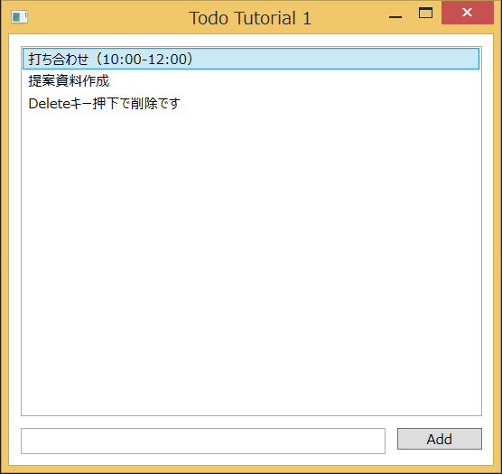
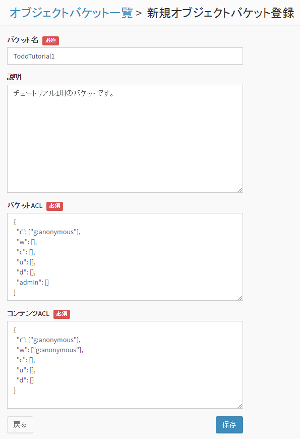

2. チュートリアル1 : TODOアプリ (オブジェクトストレージ)¶
最初のチュートリアルでは、 .NET SDK を使用して簡単な Todo アプリを作成します。
{kind=link}
- Todo 項目を入力して追加したり、削除することができます。
- データは BaaS サーバ上に保存されます。データは JSON で表現し、「オブジェクトストレージ」に格納されます。
- 本アプリは Windows 端末上で動作するアプリで、 C# で作成します。
なお、本チュートリアルでは、ユーザ認証やアクセス制御は行いません。 ユーザ認証を行うチュートリアルは、チュートリアル2以降を参照してください。
2.1. 新規アプリケーションを作成¶
まず、 BaaS サーバのデベロッパコンソールにログインし、新規アプリケーションを作成します。
アプリケーションの作成方法は、 デベロッパーコンソール利用ガイド を参照してください。
アプリの作成が完了すると、アプリの詳細情報が表示されます。 ここで表示される「テナントID」「アプリケーションID」「アプリケーションキー」は アプリケーションの認証に使用する秘密情報です。 この3つは後ほど使用しますので、メモしておいてください。
2.2. バケットの作成¶
Todo 情報を格納するための「バケット」を作成します。
画面左の「オブジェクトバケット」⇒「追加」をクリックして、バケットを追加します。
{kind=link}
バケット名は "TodoTutorial1" としてください。
また、バケットのアクセス権限を変更し、誰でも(anonymousユーザ)バケットを読み書きできるようにします。 (デフォルトでは、認証ユーザしかバケットを読み書きできないようになっています）
「バケットACL」の r の行が "g:authenticated" となっていますので、 これを "g:anonymous" に変更してください。
また、「コンテンツACL」の r と w の行が "g:authenticated" となっていますので、 こちらも "g:anonymous" に変更してください。
2.3. サンプルコードの変更¶
チュートリアル1のサンプルコードを設定し、実際に動作させてみます。
まず、Visual Studio から tutorial1 を開きます。 「ファイル」⇒「開く」⇒「プロジェクト/ソリューション」を選択し、 tutorial1 ディレクトリにある tutorial1.sln を開いてください。
次に、 tutorial1/WpfApplication1 ディレクトリにある MainWindow.xaml.cs ファイルを開き、 MainWindow() に記載の定義を以下のように変更します。
public MainWindow()
{
InitializeComponent();
//Initialize Nebula
var service = NbService.GetInstance();
service.TenantId = "...";
service.AppId = "...";
service.AppKey = "...";
service.EndpointUrl = "https://api.example.com/api";
//以下省略
}
- TenantId には テナントIDを設定してください。
- AppId にアプリケーションIDを設定してください。
- AppKey にアプリケーションキーを設定してください。
- EndpointUrl には、 NEC BaaS API サーバの URL を指定してください。
2.4. サンプルの実行¶
Visual Studio 上で、「ビルド」⇒「ソリューションのビルド」を選択し、 ビルドを実行します。
ビルドが成功すると、 tutorial1/WpfApplication1/bin/Debug に tutorial1.exe が作成されますので、タブルクリックして実行します。
画面下部のフォームに文字列を入力し、 Add ボタンを押すと、Todo が追加されます。 追加した Todo は、 BaaS サーバ上に保存されます。 デベロッパーコンソール上のオブジェクトバケット一覧画面で、先ほど作成した ”TodoTutorial1” の「データ」を参照することで確認することもできます。
なお、Todo を選択し、Delete キーを押下すると、削除となります。